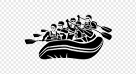

Overview
Purpose
The purpose of this site is to introduce our customers to a taste of paradise located in the heart of Zimbabwe, Gweru. Here at Rock n Water we entertain, educate and train people so that they can have great skills in water rafting. In our area and those sorrounding us, very few take the road that leads to this sport and here we are offering it on a silver platter. All that is needed is a desire and we at Rock n Water, will take it from there.
Audience
Our doors are open to anyone who comes from the four corners of Zimbabwe who have desire to do something. These people will mainly range from the age of 18-65. Most of our visitors will have access to our site through a phone and any other mobile device that has access to the internet.
Scenario Questions
- Scenario: Sarah wants to experience white water rafting but is concerned about safety. How does our website address her concerns?Answer: Our website provides detailed safety information and FAQs, ensuring Sarah feels confident in our safety measures and certified guides.
- Scenario: The Johnson family seeks a family-friendly rafting trip. How does our website reassure them?Answer: Our site showcases family-friendly trips with age recommendations and safety details, ensuring the Johnsons find a suitable adventure for their children.
- Scenario: Jake, a solo traveler, wants to join a group trip but worries about feeling out of place. How does our website encourage him to join?Answer: Our site highlights our inclusive community, featuring testimonials from solo travelers and information on upcoming group trips, encouraging Jake to join like-minded adventurers for an unforgettable experience.
Branding
Website Logo
Style Guide
Color Palete
Palette URL: https://coolors.co/0d3b66-faf0ca-f4d35e-ee964b-f95738-fa664a-fa745a-fa8169-fa8c77-fa9683
Typography
Heading Font: Times New Roman
Times New Roman is one of the most recognizable fonts in the world. It looks professional and is used in many newspapers and websites.
Paragraph Font: IM Fell French Canon SC
IM Fell French Canon SC is one of the most recognizable fonts in the world. It looks professional and is used in many newspapers and websites.
Normal paragraph example
The best Whitewater Rafting in Colorado, White Water Rafting Company offers rafting on the Colorado and Roaring Fork Rivers in Glenwood Springs. Since 1974, we have been family owned and operated, rafting the Shoshone section of Glenwood Canyon and beyond.
Colored paragraph example
Trips vary from mild and great for families, to trips exclusively for physically fit and experienced rafters. No matter what type of river adventures you are seeking, White Water Rafting Company can make it happen for you.
Navigation
Wiraframes
Home Page Wireframe

About Us Page Wireframe